、 、
译者
@SeanCheney ：
本章中
- 项目概述
。 - 获取数据
。 - 发现并可视化数据
， 。 - 为机器学习算法准备数据
。 - 选择模型
， 。 - 微调模型
。 - 给出解决方案
。 - 部署
、 、 。
使用真实数据
学习机器学习时
- 流行的开源数据仓库
： - 准入口
（ ） - 其它列出流行开源数据仓库的网页
：
本章
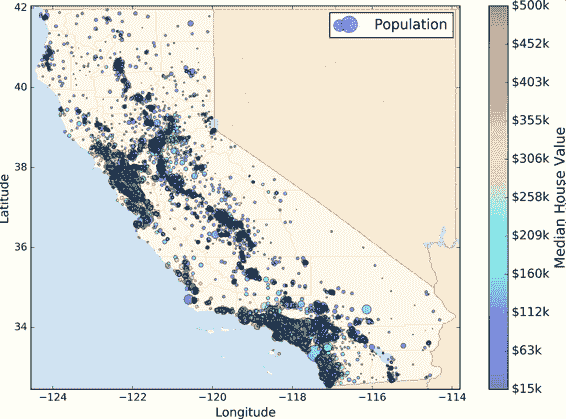
图 2-1 加州房产价格
项目概览
欢迎来到机器学习房地产公司
街区组是美国调查局发布样本数据的最小地理单位
你的模型要利用这个数据进行学习
提示
你是一个有条理的数据科学家 ： 你要做的第一件事是拿出你的机器学习项目清单 ， 你可以使用附录 B 中的清单 。 这个清单适用于大多数的机器学习项目 ； 但是你还是要确认它是否满足需求 ， 在本章中 。 我们会检查许多清单上的项目 ， 但是也会跳过一些简单的 ， 有些会在后面的章节再讨论 ， 。
划定问题
问老板的第一个问题应该是商业目标是什么
老板告诉你你的模型的输出
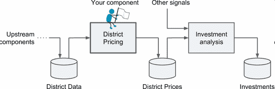
图 2-2 房地产投资的机器学习流水线
流水线
一系列的数据处理组件被称为数据流水线
流水线在机器学习系统中很常见 。 因为有许多数据要处理和转换 ， 。 组件通常是异步运行的
每个组件吸纳进大量数据 。 进行处理 ， 然后将数据传输到另一个数据容器中 ， 而后流水线中的另一个组件收入这个数据 ， 然后输出 ， 这个过程依次进行下去 ， 每个组件都是独立的 。 组件间的接口只是数据容器 ： 这样可以让系统更便于理解 。 记住数据流的图 （ ） 不同的项目组可以关注于不同的组件 ， 进而 。 如果一个组件失效了 ， 下游的组件使用失效组件最后生产的数据 ， 通常可以正常运行 ， 一段时间 （ ） 这样就使整个架构相当健壮 。 。 另一方面
如果没有监控 ， 失效的组件会在不被注意的情况下运行一段时间 ， 数据会受到污染 。 整个系统的性能就会下降 ， 。
下一个要问的问题是
OK
你能回答出来吗
提示
如果数据量很大 ： 你可以要么在多个服务器上对批量学习做拆分 ， 使用 MapReduce 技术 （ 后面会看到 ， ） 或是使用线上学习 ， 。
选择性能指标
下一步是选择性能指标1σ内2σ内3σ内σ等于 50000
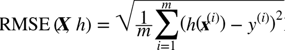
公式 2-1 均方根误差
符号的含义
这个方程引入了一些常见的贯穿本书的机器学习符号
：
m是测量 RMSE 的数据集中的实例数量。
例如如果用一个含有 2000 个街区的验证集求 RMSE ， 则 ， m = 2000。
x^(i)是数据集第i个实例的所有特征值不包含标签 （ 的向量 ） ， y^(i)是它的标签这个实例的输出值 （ ） 。 例如
如果数据集中的第一个街区位于经度 –118.29° ， 纬度 33.91° ， 有 1416 名居民 ， 收入中位数是 38372 美元 ， 房价中位数是 156400 美元 ， 忽略掉其它的特征 （ ） 则有 ， ： 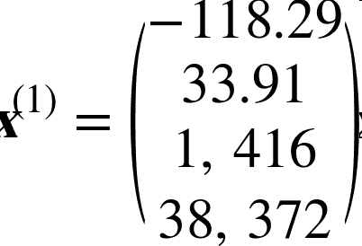
和
， 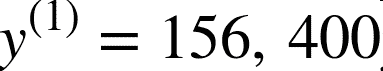
X是包含数据集中所有实例的所有特征值不包含标签 （ 的矩阵 ） 每一行是一个实例 。 第 ， i行是x^(i)的转置记为 ， x^(i)^T。 例如
仍然是前面提到的第一区 ， 矩阵 ， X就是： 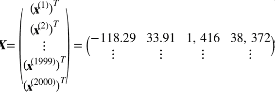
h是系统的预测函数也称为假设 ， hypothesis （ ） 当系统收到一个实例的特征向量 。 x^(i)就会输出这个实例的一个预测值 ， y_hat = h(x^(i))（ y_hat读作y-hat） 。 例如
如果系统预测第一区的房价中位数是 158400 美元 ， 则 ， y_hat^(1) = h(x^(1)) = 158400预测误差是 。 y_hat^(1) - y^(1) = 2000。
RMSE(X,h)是使用假设h在样本集上测量的损失函数。 我们使用小写斜体表示标量值
例如 （ m或y^(i)和函数名 ） 例如 （ h） 小写粗体表示向量 ， 例如 （ x^(i)） 大写粗体表示矩阵 ， 例如 （ X） 。
虽然大多数时候 RMSE 是回归任务可靠的性能指标
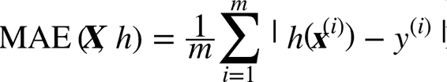
公式 2-2 平均绝对误差
RMSE 和 MAE 都是测量预测值和目标值两个向量距离的方法
-
计算对应欧几里得范数的平方和的根
（ ） ： 。 ℓ2范数， ||·||₂（ ||·||） 。 -
计算对应于
ℓ1（ ||·||₁） （ ） 。 ， ， ， 。 -
更一般的
， n个元素的向量v的ℓk范数（ ） ， 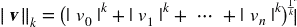
ℓ0（ ） （ ， ） ， ℓ∞（ ） 。 -
范数的指数越高
， 。 。 （ ） ， 。
核实假设
最后
幸运的是
获取数据
开始动手
创建工作空间
首先
接下来$之后
$ export ML_PATH="$HOME/ml" # 可以更改路径
$ mkdir -p $ML_PATH
还需要一些 Python 模块apt-getpippip
$ pip3 --version
pip 9.0.1 from [...]/lib/python3.5/site-packages (python 3.5)
你需要保证pip是近期的版本pip
$ pip3 install --upgrade pip
Collecting pip
[...]
Successfully installed pip-9.0.1
创建独立环境
如果你希望在一个独立环境中工作
强烈推荐这么做 （ 不同项目的库的版本不会冲突 ， ） 用下面的 ， pip命令安装virtualenv： $ pip3 install --user --upgrade virtualenv Collecting virtualenv [...] Successfully installed virtualenv现在可以通过下面命令创建一个独立的 Python 环境
： $ cd $ML_PATH $ virtualenv env Using base prefix '[...]' New python executable in [...]/ml/env/bin/python3.5 Also creating executable in [...]/ml/env/bin/python Installing setuptools, pip, wheel...done.以后每次想要激活这个环境,只需打开一个终端然后输入
： $ cd $ML_PATH $ source env/bin/activate启动该环境时
使用 ， pip安装的任何包都只安装于这个独立环境中Python 指挥访问这些包 ， 如果你希望 Python 能访问系统的包 （ 创建环境时要使用包选项 ， --system-site） 更多信息 。 请查看 ， virtualenv文档。
现在pip命令安装所有必需的模块和它们的依赖
$ pip3 install --upgrade jupyter matplotlib numpy pandas scipy scikit-learn
Collecting jupyter
Downloading jupyter-1.0.0-py2.py3-none-any.whl
Collecting matplotlib
[...]
要检查安装
$ python3 -c "import jupyter, matplotlib, numpy, pandas, scipy, sklearn"
这个命令不应该有任何输出和错误
$ jupyter notebook
[I 15:24 NotebookApp] Serving notebooks from local directory: [...]/ml
[I 15:24 NotebookApp] 0 active kernels
[I 15:24 NotebookApp] The Jupyter Notebook is running at: http://localhost:8888/
[I 15:24 NotebookApp] Use Control-C to stop this server and shut down all
kernels (twice to skip confirmation).
Jupyter 服务器现在运行在终端上http://localhost:8888/virtualenv步骤env目录
现在点击按钮New创建一个新的 Python 注本
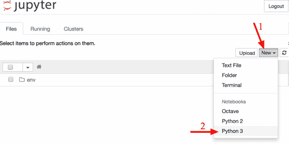
图 2-3 Jupyter 的工作空间
这一步做了三件事Untitled.ipynbUntitledHousingipynb文件自动命名为Housing.ipynb
笔记本包含一组代码框In [1]:print("Hello world!")Shift+EnterHelp菜单中的User Interface Tour
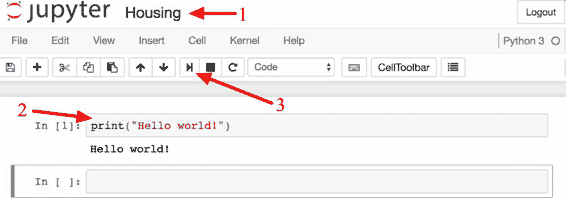
图 2-4 在笔记本中打印Hello world!
下载数据
一般情况下housing.tgzhousing.csv
你可以使用浏览器下载tar xzf housing.tgz解压出csv文件
下面是获取数据的函数
import os
import tarfile
from six.moves import urllib
DOWNLOAD_ROOT = "https://raw.githubusercontent.com/ageron/handson-ml/master/"
HOUSING_PATH = "datasets/housing"
HOUSING_URL = DOWNLOAD_ROOT + HOUSING_PATH + "/housing.tgz"
def fetch_housing_data(housing_url=HOUSING_URL, housing_path=HOUSING_PATH):
if not os.path.isdir(housing_path):
os.makedirs(housing_path)
tgz_path = os.path.join(housing_path, "housing.tgz")
urllib.request.urlretrieve(housing_url, tgz_path)
housing_tgz = tarfile.open(tgz_path)
housing_tgz.extractall(path=housing_path)
housing_tgz.close()
现在fetch_housing_data()datasets/housing目录housing.tgz文件housing.csv
然后使用 Pandas 加载数据
import pandas as pd
def load_housing_data(housing_path=HOUSING_PATH):
csv_path = os.path.join(housing_path, "housing.csv")
return pd.read_csv(csv_path)
这个函数会返回一个包含所有数据的 Pandas DataFrame 对象
快速查看数据结构
使用DataFrame的head()方法查看该数据集的前 5 行
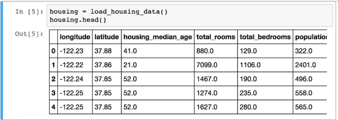
图 2-5 数据集的前五行
每一行都表示一个街区
info()方法可以快速查看数据的描述
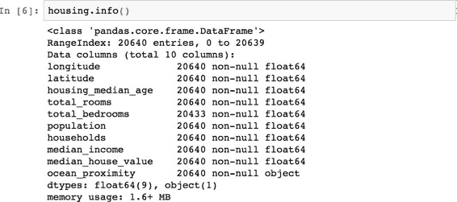
图 2-6 房屋信息
数据集中共有 20640 个实例
所有的属性都是数值的value_counts()方法查看该项中都有哪些类别
>>> housing["ocean_proximity"].value_counts()
<1H OCEAN 9136
INLAND 6551
NEAR OCEAN 2658
NEAR BAY 2290
ISLAND 5
Name: ocean_proximity, dtype: int64
再来看其它字段describe()方法展示了数值属性的概括
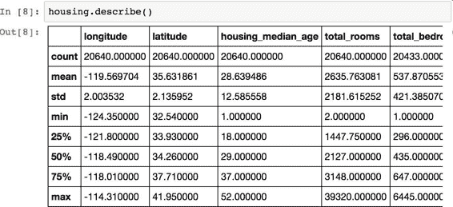
图 2-7 每个数值属性的概括
countmeanmin和max几行的意思很明显了std是标准差
另一种快速了解数据类型的方法是画出每个数值属性的柱状图hist()方法median_house_value值差不多等于 500000 美元
%matplotlib inline # only in a Jupyter notebook
import matplotlib.pyplot as plt
housing.hist(bins=50, figsize=(20,15))
plt.show()
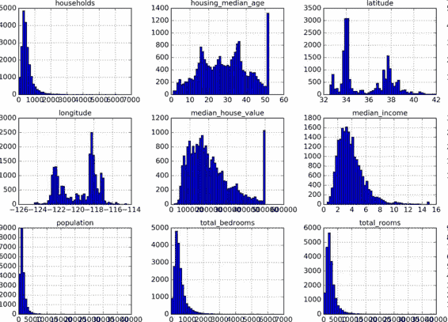
图 2-8 每个数值属性的柱状图
注
： hist()方法依赖于 Matplotlib后者依赖于用户指定的图形后端以打印到屏幕上 ， 因此在画图之前 。 你要指定 Matplotlib 要使用的后端 ， 最简单的方法是使用 Jupyter 的魔术命令 。 %matplotlib inline它会告诉 Jupyter 设定好 Matplotlib 。 以使用 Jupyter 自己的后端 ， 绘图就会在笔记本中渲染了 。 注意在 Jupyter 中调用 。 show()不是必要的因为代码框执行后 Jupyter 会自动展示图像 ， 。
注意柱状图中的一些点
-
首先
， （ ） 。 ， ， （ ） ， （ ） 。 ， ， 。 -
房屋年龄中位数和房屋价值中位数也被设了上限
。 ， （ ） 。 。 ， 。 ， ， ： - 对于设了上限的标签
， ； - 将这些街区从训练集移除
（ ， ， ） 。
- 对于设了上限的标签
-
这些属性值有不同的量度
。 。 -
最后
， ： ， 。 ， 。 ， 。
希望你现在对要处理的数据有一定了解了
警告
稍等 ： 在你进一步查看数据之前 ！ 你需要创建一个测试集 ， 将它放在一旁 ， 千万不要再看它 ， 。
创建测试集
在这个阶段就分割数据
理论上
import numpy as np
def split_train_test(data, test_ratio):
shuffled_indices = np.random.permutation(len(data))
test_set_size = int(len(data) * test_ratio)
test_indices = shuffled_indices[:test_set_size]
train_indices = shuffled_indices[test_set_size:]
return data.iloc[train_indices], data.iloc[test_indices]
然后可以像下面这样使用这个函数
>>> train_set, test_set = split_train_test(housing, 0.2)
>>> print(len(train_set), "train +", len(test_set), "test")
16512 train + 4128 test
这个方法可行
解决的办法之一是保存第一次运行得到的测试集np.random.permutation()之前np.random.seed(42)
但是如果数据集更新
import hashlib
def test_set_check(identifier, test_ratio, hash):
return hash(np.int64(identifier)).digest()[-1] < 256 * test_ratio
def split_train_test_by_id(data, test_ratio, id_column, hash=hashlib.md5):
ids = data[id_column]
in_test_set = ids.apply(lambda id_: test_set_check(id_, test_ratio, hash))
return data.loc[~in_test_set], data.loc[in_test_set]
不过
housing_with_id = housing.reset_index() # adds an `index` column
train_set, test_set = split_train_test_by_id(housing_with_id, 0.2, "index")
如果使用行索引作为唯一识别码
housing_with_id["id"] = housing["longitude"] * 1000 + housing["latitude"]
train_set, test_set = split_train_test_by_id(housing_with_id, 0.2, "id")
Scikit-Learn 提供了一些函数train_test_splitsplit_train_test很像random_state参数DataFrame里的
from sklearn.model_selection import train_test_split
train_set, test_set = train_test_split(housing, test_size=0.2, random_state=42)
目前为止
假设专家告诉你
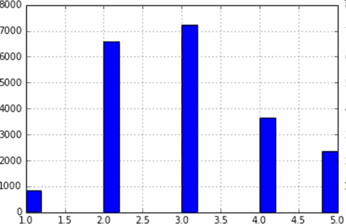
图 2-9 收入分类的柱状图
大多数的收入中位数的值聚集在 2-5ceil对值舍入
housing["income_cat"] = np.ceil(housing["median_income"] / 1.5)
housing["income_cat"].where(housing["income_cat"] < 5, 5.0, inplace=True)
现在StratifiedShuffleSplit类
from sklearn.model_selection import StratifiedShuffleSplit
split = StratifiedShuffleSplit(n_splits=1, test_size=0.2, random_state=42)
for train_index, test_index in split.split(housing, housing["income_cat"]):
strat_train_set = housing.loc[train_index]
strat_test_set = housing.loc[test_index]
检查下结果是否符合预期
>>> housing["income_cat"].value_counts() / len(housing)
3.0 0.350581
2.0 0.318847
4.0 0.176308
5.0 0.114438
1.0 0.039826
Name: income_cat, dtype: float64
使用相似的代码
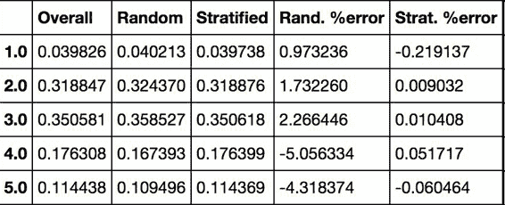
图 2-10 分层采样和纯随机采样的样本偏差比较
现在income_cat属性
for set in (strat_train_set, strat_test_set):
set.drop(["income_cat"], axis=1, inplace=True)
我们用了大量时间来生成测试集的原因是
、 、
目前为止
首先
housing = strat_train_set.copy()
地理数据可视化
因为存在地理信息
housing.plot(kind="scatter", x="longitude", y="latitude")
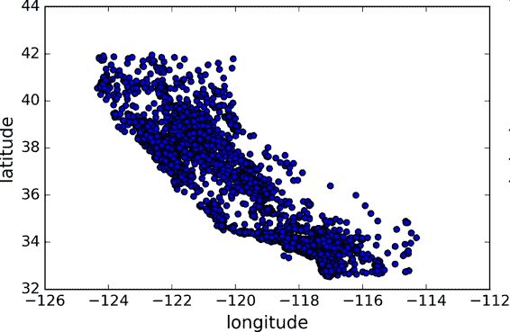
图 2-11 数据的地理信息散点图
这张图看起来很像加州alpha设为 0.1
housing.plot(kind="scatter", x="longitude", y="latitude", alpha=0.1)
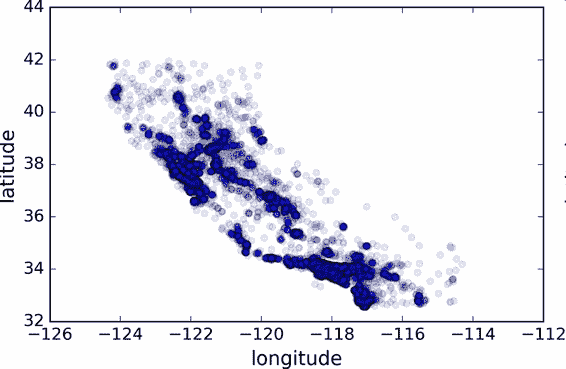
图 2-12 显示高密度区域的散点图
现在看起来好多了
通常来讲
现在来看房价scjet的颜色图cmap
housing.plot(kind="scatter", x="longitude", y="latitude", alpha=0.4,
s=housing["population"]/100, label="population",
c="median_house_value", cmap=plt.get_cmap("jet"), colorbar=True,
)
plt.legend()
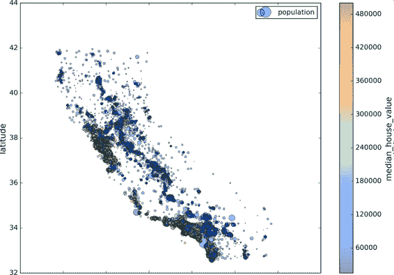
图 2-13 加州房价
这张图说明房价和位置
查找关联
因为数据集并不是非常大corr()方法计算出每对属性间的标准相关系数
corr_matrix = housing.corr()
现在来看下每个属性和房价中位数的关联度
>>> corr_matrix["median_house_value"].sort_values(ascending=False)
median_house_value 1.000000
median_income 0.687170
total_rooms 0.135231
housing_median_age 0.114220
households 0.064702
total_bedrooms 0.047865
population -0.026699
longitude -0.047279
latitude -0.142826
Name: median_house_value, dtype: float64
相关系数的范围是 -1 到 1
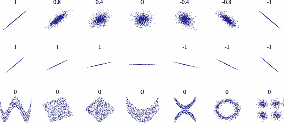
图 2-14 不同数据集的标准相关系数
警告
相关系数只测量线性关系 ： 如果 （ x上升， y则上升或下降） 相关系数可能会完全忽略非线性关系 。 例如 （ 如果 ， x接近 0则 ， y值会变高） 在上面图片的最后一行中 。 他们的相关系数都接近于 0 ， 尽管它们的轴并不独立 ， 这些就是非线性关系的例子 ： 另外 。 第二行的相关系数等于 1 或 -1 ， 这和斜率没有任何关系 ； 例如 。 你的身高 ， 单位是英寸 （ 与身高 ） 单位是英尺或纳米 （ 的相关系数就是 1 ） 。
另一种检测属性间相关系数的方法是使用 Pandas 的scatter_matrix函数11 ** 2 = 121张图
from pandas.tools.plotting import scatter_matrix
attributes = ["median_house_value", "median_income", "total_rooms",
"housing_median_age"]
scatter_matrix(housing[attributes], figsize=(12, 8))
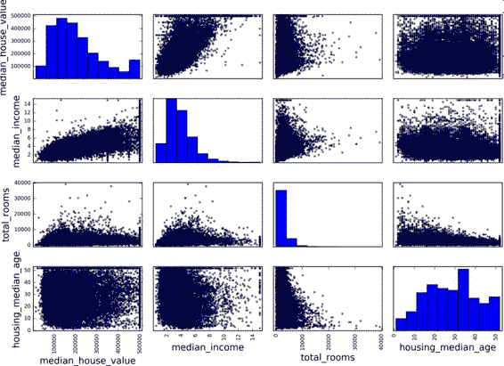
图 2-15 散点矩阵
如果 pandas 将每个变量对自己作图
最有希望用来预测房价中位数的属性是收入中位数
housing.plot(kind="scatter", x="median_income",y="median_house_value",
alpha=0.1)
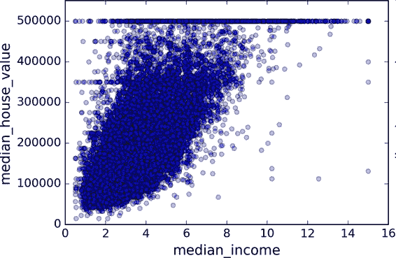
图 2-16 收入中位数 vs 房价中位数
这张图说明了几点
属性组合试验
希望前面的一节能教给你一些探索数据log对数
给算法准备数据之前
housing["rooms_per_household"] = housing["total_rooms"]/housing["households"]
housing["bedrooms_per_room"] = housing["total_bedrooms"]/housing["total_rooms"]
housing["population_per_household"]=housing["population"]/housing["households"]
现在
>>> corr_matrix = housing.corr()
>>> corr_matrix["median_house_value"].sort_values(ascending=False)
median_house_value 1.000000
median_income 0.687170
rooms_per_household 0.199343
total_rooms 0.135231
housing_median_age 0.114220
households 0.064702
total_bedrooms 0.047865
population_per_household -0.021984
population -0.026699
longitude -0.047279
latitude -0.142826
bedrooms_per_room -0.260070
Name: median_house_value, dtype: float64
看起来不错bedrooms_per_room属性与房价中位数的关联更强
这一步的数据探索不必非常完备
为机器学习算法准备数据
现在来为机器学习算法准备数据
-
函数可以让你在任何数据集上
（ ， ） 。 -
你能慢慢建立一个转换函数库
， 。 -
在将数据传给算法之前
， 。 -
这可以让你方便地尝试多种数据转换
， 。
但是strat_train_setdrop()创建了一份数据的备份strat_train_set
housing = strat_train_set.drop("median_house_value", axis=1)
housing_labels = strat_train_set["median_house_value"].copy()
数据清洗
大多机器学习算法不能处理缺失的特征total_bedrooms有一些缺失值
-
去掉对应的街区
； -
去掉整个属性
； -
进行赋值
（ 、 、 ） 。
用DataFrame的dropna()drop()fillna()方法
housing.dropna(subset=["total_bedrooms"]) # 选项 1
housing.drop("total_bedrooms", axis=1) # 选项 2
median = housing["total_bedrooms"].median()
housing["total_bedrooms"].fillna(median) # 选项 3
如果选择选项 3
Scikit-Learn 提供了一个方便的类来处理缺失值ImputerImputer实例
from sklearn.preprocessing import Imputer
imputer = Imputer(strategy="median")
因为只有数值属性才能算出中位数ocean_proximity的数据副本
housing_num = housing.drop("ocean_proximity", axis=1)
现在fit()方法将imputer实例拟合到训练数据
imputer.fit(housing_num)
imputer计算出了每个属性的中位数statistics_中total_bedrooms存在缺失值imputer应用到每个数值
>>> imputer.statistics_
array([ -118.51 , 34.26 , 29. , 2119. , 433. , 1164. , 408. , 3.5414])
>>> housing_num.median().values
array([ -118.51 , 34.26 , 29. , 2119. , 433. , 1164. , 408. , 3.5414])
现在imputer来对训练集进行转换
X = imputer.transform(housing_num)
结果是一个包含转换后特征的普通的 Numpy 数组DataFrame中
housing_tr = pd.DataFrame(X, columns=housing_num.columns)
Scikit-Learn 设计
Scikit-Learn 设计的 API 设计的非常好
它的主要设计原则是 。 ：
一致性
所有对象的接口一致且简单 ： ：
- 估计器
estimator （ ） 任何可以基于数据集对一些参数进行估计的对象都被称为估计器 。 比如 （ ， imputer就是个估计器） 估计本身是通过 。 fit()方法只需要一个数据集作为参数 ， 对于监督学习算法 （ 需要两个数据集 ， 第二个数据集包含标签 ； ） 任何其它用来指导估计过程的参数都被当做超参数 。 比如 （ imputer的strategy） 并且超参数要被设置成实例变量 ， 通常通过构造器参数设置 （ ） 。 - 转换器
transformer （ ） 一些估计器 。 比如 （ imputer也可以转换数据集 ） 这些估计器被称为转换器 ， API 也是相当简单 。 转换是通过 ： transform()方法被转换的数据集作为参数 ， 返回的是经过转换的数据集 。 转换过程依赖学习到的参数 。 比如 ， imputer的例子所有的转换都有一个便捷的方法 。 fit_transform()等同于调用 ， fit()再transform()但有时 （ fit_transform()经过优化运行的更快 ， ） 。 - 预测器
predictor （ ） 最后 。 一些估计器可以根据给出的数据集做预测 ， 这些估计器称为预测器 ， 例如 。 上一章的 ， LinearRegression模型就是一个预测器它根据一个国家的人均 GDP 预测生活满意度 ： 预测器有一个 。 predict()方法可以用新实例的数据集做出相应的预测 ， 预测器还有一个 。 score()方法可用于评估测试集 ， 如果是监督学习算法的话 （ 还要给出相应的标签 ， 的预测质量 ） 。 可检验
所有估计器的超参数都可以通过实例的公共变量直接访问 。 比如 （ ， imputer.strategy） 并且所有估计器学习到的参数也可以通过在实例变量名后加下划线来访问 ， 比如 （ ， imputer.statistics_） 。 类不可扩散
数据集被表示成 NumPy 数组或 SciPy 稀疏矩阵 。 而不是自制的类 ， 超参数只是普通的 Python 字符串或数字 。 。 可组合
尽可能使用现存的模块 。 例如 。 用任意的转换器序列加上一个估计器 ， 就可以做成一个流水线 ， 后面会看到例子 ， 。 合理的默认值
Scikit-Learn 给大多数参数提供了合理的默认值 。 很容易就能创建一个系统 ， 。
处理文本和类别属性
前面ocean_proximity
Scikit-Learn 为这个任务提供了一个转换器LabelEncoder
>>> from sklearn.preprocessing import LabelEncoder
>>> encoder = LabelEncoder()
>>> housing_cat = housing["ocean_proximity"]
>>> housing_cat_encoded = encoder.fit_transform(housing_cat)
>>> housing_cat_encoded
array([1, 1, 4, ..., 1, 0, 3])
译注:
在原书中使用
LabelEncoder转换器来转换文本特征列的方式是错误的该转换器只能用来转换标签 ， 正如其名 （ ） 在这里使用 。 LabelEncoder没有出错的原因是该数据只有一列文本特征值在有多个文本特征列的时候就会出错 ， 应使用 。 factorize()方法来进行操作： housing_cat_encoded, housing_categories = housing_cat.factorize() housing_cat_encoded[:10]
好了一些classes_来学习的<1H OCEAN被映射为 0INLAND被映射为 1
>>> print(encoder.classes_)
['<1H OCEAN' 'INLAND' 'ISLAND' 'NEAR BAY' 'NEAR OCEAN']
这种做法的问题是<1H OCEANINLAND
Scikit-Learn 提供了一个编码器OneHotEncoderfit_transform()用于 2D 数组housing_cat_encoded是一个 1D 数组
>>> from sklearn.preprocessing import OneHotEncoder
>>> encoder = OneHotEncoder()
>>> housing_cat_1hot = encoder.fit_transform(housing_cat_encoded.reshape(-1,1))
>>> housing_cat_1hot
<16513x5 sparse matrix of type '<class 'numpy.float64'>'
with 16513 stored elements in Compressed Sparse Row format>
注意输出结果是一个 SciPy 稀疏矩阵toarray()方法
>>> housing_cat_1hot.toarray()
array([[ 0., 1., 0., 0., 0.],
[ 0., 1., 0., 0., 0.],
[ 0., 0., 0., 0., 1.],
...,
[ 0., 1., 0., 0., 0.],
[ 1., 0., 0., 0., 0.],
[ 0., 0., 0., 1., 0.]])
使用类LabelBinarizer
>>> from sklearn.preprocessing import LabelBinarizer
>>> encoder = LabelBinarizer()
>>> housing_cat_1hot = encoder.fit_transform(housing_cat)
>>> housing_cat_1hot
array([[0, 1, 0, 0, 0],
[0, 1, 0, 0, 0],
[0, 0, 0, 0, 1],
...,
[0, 1, 0, 0, 0],
[1, 0, 0, 0, 0],
[0, 0, 0, 1, 0]])
注意默认返回的结果是一个密集 NumPy 数组LabelBinarizer传递sparse_output=True
译注:
在原书中使用
LabelBinarizer的方式也是错误的该类也应用于标签列的转换 ， 正确做法是使用 sklearn 即将提供的 。 CategoricalEncoder类如果在你阅读此文时 sklearn 中尚未提供此类 。 用如下方式代替 ， ： 来自 Pull Request #9151 （ ） # Definition of the CategoricalEncoder class, copied from PR #9151. # Just run this cell, or copy it to your code, do not try to understand it (yet). from sklearn.base import BaseEstimator, TransformerMixin from sklearn.utils import check_array from sklearn.preprocessing import LabelEncoder from scipy import sparse class CategoricalEncoder(BaseEstimator, TransformerMixin): """Encode categorical features as a numeric array. The input to this transformer should be a matrix of integers or strings, denoting the values taken on by categorical (discrete) features. The features can be encoded using a one-hot aka one-of-K scheme (``encoding='onehot'``, the default) or converted to ordinal integers (``encoding='ordinal'``). This encoding is needed for feeding categorical data to many scikit-learn estimators, notably linear models and SVMs with the standard kernels. Read more in the :ref:`User Guide <preprocessing_categorical_features>`. Parameters ---------- encoding : str, 'onehot', 'onehot-dense' or 'ordinal' The type of encoding to use (default is 'onehot'): - 'onehot': encode the features using a one-hot aka one-of-K scheme (or also called 'dummy' encoding). This creates a binary column for each category and returns a sparse matrix. - 'onehot-dense': the same as 'onehot' but returns a dense array instead of a sparse matrix. - 'ordinal': encode the features as ordinal integers. This results in a single column of integers (0 to n_categories - 1) per feature. categories : 'auto' or a list of lists/arrays of values. Categories (unique values) per feature: - 'auto' : Determine categories automatically from the training data. - list : ``categories[i]`` holds the categories expected in the ith column. The passed categories are sorted before encoding the data (used categories can be found in the ``categories_`` attribute). dtype : number type, default np.float64 Desired dtype of output. handle_unknown : 'error' (default) or 'ignore' Whether to raise an error or ignore if a unknown categorical feature is present during transform (default is to raise). When this is parameter is set to 'ignore' and an unknown category is encountered during transform, the resulting one-hot encoded columns for this feature will be all zeros. Ignoring unknown categories is not supported for ``encoding='ordinal'``. Attributes ---------- categories_ : list of arrays The categories of each feature determined during fitting. When categories were specified manually, this holds the sorted categories (in order corresponding with output of `transform`). Examples -------- Given a dataset with three features and two samples, we let the encoder find the maximum value per feature and transform the data to a binary one-hot encoding. >>> from sklearn.preprocessing import CategoricalEncoder >>> enc = CategoricalEncoder(handle_unknown='ignore') >>> enc.fit([[0, 0, 3], [1, 1, 0], [0, 2, 1], [1, 0, 2]]) ... # doctest: +ELLIPSIS CategoricalEncoder(categories='auto', dtype=<... 'numpy.float64'>, encoding='onehot', handle_unknown='ignore') >>> enc.transform([[0, 1, 1], [1, 0, 4]]).toarray() array([[ 1., 0., 0., 1., 0., 0., 1., 0., 0.], [ 0., 1., 1., 0., 0., 0., 0., 0., 0.]]) See also -------- sklearn.preprocessing.OneHotEncoder : performs a one-hot encoding of integer ordinal features. The ``OneHotEncoder assumes`` that input features take on values in the range ``[0, max(feature)]`` instead of using the unique values. sklearn.feature_extraction.DictVectorizer : performs a one-hot encoding of dictionary items (also handles string-valued features). sklearn.feature_extraction.FeatureHasher : performs an approximate one-hot encoding of dictionary items or strings. """ def __init__(self, encoding='onehot', categories='auto', dtype=np.float64, handle_unknown='error'): self.encoding = encoding self.categories = categories self.dtype = dtype self.handle_unknown = handle_unknown def fit(self, X, y=None): """Fit the CategoricalEncoder to X. Parameters ---------- X : array-like, shape [n_samples, n_feature] The data to determine the categories of each feature. Returns ------- self """ if self.encoding not in ['onehot', 'onehot-dense', 'ordinal']: template = ("encoding should be either 'onehot', 'onehot-dense' " "or 'ordinal', got %s") raise ValueError(template % self.handle_unknown) if self.handle_unknown not in ['error', 'ignore']: template = ("handle_unknown should be either 'error' or " "'ignore', got %s") raise ValueError(template % self.handle_unknown) if self.encoding == 'ordinal' and self.handle_unknown == 'ignore': raise ValueError("handle_unknown='ignore' is not supported for" " encoding='ordinal'") X = check_array(X, dtype=np.object, accept_sparse='csc', copy=True) n_samples, n_features = X.shape self._label_encoders_ = [LabelEncoder() for _ in range(n_features)] for i in range(n_features): le = self._label_encoders_[i] Xi = X[:, i] if self.categories == 'auto': le.fit(Xi) else: valid_mask = np.in1d(Xi, self.categories[i]) if not np.all(valid_mask): if self.handle_unknown == 'error': diff = np.unique(Xi[~valid_mask]) msg = ("Found unknown categories {0} in column {1}" " during fit".format(diff, i)) raise ValueError(msg) le.classes_ = np.array(np.sort(self.categories[i])) self.categories_ = [le.classes_ for le in self._label_encoders_] return self def transform(self, X): """Transform X using one-hot encoding. Parameters ---------- X : array-like, shape [n_samples, n_features] The data to encode. Returns ------- X_out : sparse matrix or a 2-d array Transformed input. """ X = check_array(X, accept_sparse='csc', dtype=np.object, copy=True) n_samples, n_features = X.shape X_int = np.zeros_like(X, dtype=np.int) X_mask = np.ones_like(X, dtype=np.bool) for i in range(n_features): valid_mask = np.in1d(X[:, i], self.categories_[i]) if not np.all(valid_mask): if self.handle_unknown == 'error': diff = np.unique(X[~valid_mask, i]) msg = ("Found unknown categories {0} in column {1}" " during transform".format(diff, i)) raise ValueError(msg) else: # Set the problematic rows to an acceptable value and # continue `The rows are marked `X_mask` and will be # removed later. X_mask[:, i] = valid_mask X[:, i][~valid_mask] = self.categories_[i][0] X_int[:, i] = self._label_encoders_[i].transform(X[:, i]) if self.encoding == 'ordinal': return X_int.astype(self.dtype, copy=False) mask = X_mask.ravel() n_values = [cats.shape[0] for cats in self.categories_] n_values = np.array([0] + n_values) indices = np.cumsum(n_values) column_indices = (X_int + indices[:-1]).ravel()[mask] row_indices = np.repeat(np.arange(n_samples, dtype=np.int32), n_features)[mask] data = np.ones(n_samples * n_features)[mask] out = sparse.csc_matrix((data, (row_indices, column_indices)), shape=(n_samples, indices[-1]), dtype=self.dtype).tocsr() if self.encoding == 'onehot-dense': return out.toarray() else: return out转换方法
： #from sklearn.preprocessing import CategoricalEncoder # in future versions of Scikit-Learn cat_encoder = CategoricalEncoder() housing_cat_reshaped = housing_cat.values.reshape(-1, 1) housing_cat_1hot = cat_encoder.fit_transform(housing_cat_reshaped) housing_cat_1hot
自定义转换器
尽管 Scikit-Learn 提供了许多有用的转换器fit()selftransform()fit_transform()TransformerMixin作为基类BaseEstimator作为基类*args和**kargsget_params() 和set_params()
from sklearn.base import BaseEstimator, TransformerMixin
rooms_ix, bedrooms_ix, population_ix, household_ix = 3, 4, 5, 6
class CombinedAttributesAdder(BaseEstimator, TransformerMixin):
def __init__(self, add_bedrooms_per_room = True): # no *args or **kargs
self.add_bedrooms_per_room = add_bedrooms_per_room
def fit(self, X, y=None):
return self # nothing else to do
def transform(self, X, y=None):
rooms_per_household = X[:, rooms_ix] / X[:, household_ix]
population_per_household = X[:, population_ix] / X[:, household_ix]
if self.add_bedrooms_per_room:
bedrooms_per_room = X[:, bedrooms_ix] / X[:, rooms_ix]
return np.c_[X, rooms_per_household, population_per_household,
bedrooms_per_room]
else:
return np.c_[X, rooms_per_household, population_per_household]
attr_adder = CombinedAttributesAdder(add_bedrooms_per_room=False)
housing_extra_attribs = attr_adder.transform(housing.values)
在这个例子中add_bedrooms_per_roomTrue
特征缩放
数据要做的最重要的转换之一是特征缩放
有两种常见的方法可以让所有的属性有相同的量度
线性函数归一化MinMaxScaler来实现这个功能feature_range
标准化就很不同StandardScaler来进行标准化
警告
与所有的转换一样 ： 缩放器只能向训练集拟合 ， 而不是向完整的数据集 ， 包括测试集 （ ） 只有这样 。 你才能用缩放器转换训练集和测试集 ， 和新数据 （ ） 。
转换流水线
你已经看到Pipeline
from sklearn.pipeline import Pipeline
from sklearn.preprocessing import StandardScaler
num_pipeline = Pipeline([
('imputer', Imputer(strategy="median")),
('attribs_adder', CombinedAttributesAdder()),
('std_scaler', StandardScaler()),
])
housing_num_tr = num_pipeline.fit_transform(housing_num)
Pipeline构造器需要一个定义步骤顺序的名字/估计器对的列表fit_transform()方法
当你调用流水线的fit()方法fit_transform()方法fit()方法
流水线暴露相同的方法作为最终的估计器StandardScalertransform()方法fit_transform方法可以使用fit()再进行transform()
如果不需要手动将 PandasDataFrame中的数值列转成 Numpy 数组的格式DataFrame输入 pipeline 中进行处理就好了DataFrame
from sklearn.base import BaseEstimator, TransformerMixin
class DataFrameSelector(BaseEstimator, TransformerMixin):
def __init__(self, attribute_names):
self.attribute_names = attribute_names
def fit(self, X, y=None):
return self
def transform(self, X):
return X[self.attribute_names].values
每个子流水线都以一个选择转换器开始DataFrame转变成一个 NumPy 数组DataFrame为输入并且可以处理数值的流水线DataFrameSelector开始获取数值属性DataFrameSelector选择类别属性并为其写另一个流水线然后应用LabelBinarizer.
你现在就有了一个对数值的流水线LabelBinarizerFeatureUnion实现这个功能transform()方法transform()会被并行执行fit()方法就会调用每个转换器的fit()
from sklearn.pipeline import FeatureUnion
num_attribs = list(housing_num)
cat_attribs = ["ocean_proximity"]
num_pipeline = Pipeline([
('selector', DataFrameSelector(num_attribs)),
('imputer', Imputer(strategy="median")),
('attribs_adder', CombinedAttributesAdder()),
('std_scaler', StandardScaler()),
])
cat_pipeline = Pipeline([
('selector', DataFrameSelector(cat_attribs)),
('label_binarizer', LabelBinarizer()),
])
full_pipeline = FeatureUnion(transformer_list=[
("num_pipeline", num_pipeline),
("cat_pipeline", cat_pipeline),
])
译注:
如果你在上面代码中的
cat_pipeline流水线使用LabelBinarizer转换器会导致执行错误解决方案是用上文提到的 ， CategoricalEncoder转换器来代替： cat_pipeline = Pipeline([ ('selector', DataFrameSelector(cat_attribs)), ('cat_encoder', CategoricalEncoder(encoding="onehot-dense")), ])
你可以很简单地运行整个流水线
>>> housing_prepared = full_pipeline.fit_transform(housing)
>>> housing_prepared
array([[ 0.73225807, -0.67331551, 0.58426443, ..., 0. ,
0. , 0. ],
[-0.99102923, 1.63234656, -0.92655887, ..., 0. ,
0. , 0. ],
[...]
>>> housing_prepared.shape
(16513, 17)
选择并训练模型
可到这一步了
在训练集上训练和评估
好消息是基于前面的工作
from sklearn.linear_model import LinearRegression
lin_reg = LinearRegression()
lin_reg.fit(housing_prepared, housing_labels)
完毕
>>> some_data = housing.iloc[:5]
>>> some_labels = housing_labels.iloc[:5]
>>> some_data_prepared = full_pipeline.transform(some_data)
>>> print("Predictions:\t", lin_reg.predict(some_data_prepared))
Predictions: [ 303104. 44800. 308928. 294208. 368704.]
>>> print("Labels:\t\t", list(some_labels))
Labels: [359400.0, 69700.0, 302100.0, 301300.0, 351900.0]
行的通mean_squared_error函数
>>> from sklearn.metrics import mean_squared_error
>>> housing_predictions = lin_reg.predict(housing_prepared)
>>> lin_mse = mean_squared_error(housing_labels, housing_predictions)
>>> lin_rmse = np.sqrt(lin_mse)
>>> lin_rmse
68628.413493824875
OKmedian_housing_values位于 120000 到 265000 美元之间
来训练一个DecisionTreeRegressor
from sklearn.tree import DecisionTreeRegressor
tree_reg = DecisionTreeRegressor()
tree_reg.fit(housing_prepared, housing_labels)
现在模型就训练好了
>>> housing_predictions = tree_reg.predict(housing_prepared)
>>> tree_mse = mean_squared_error(housing_labels, housing_predictions)
>>> tree_rmse = np.sqrt(tree_mse)
>>> tree_rmse
0.0
等一下
使用交叉验证做更佳的评估
评估决策树模型的一种方法是用函数train_test_split来分割训练集
另一种更好的方法是使用 Scikit-Learn 的交叉验证功能
from sklearn.model_selection import cross_val_score
scores = cross_val_score(tree_reg, housing_prepared, housing_labels,
scoring="neg_mean_squared_error", cv=10)
tree_rmse_scores = np.sqrt(-scores)
警告
Scikit-Learn 交叉验证功能期望的是效用函数 ： 越大越好 （ 而不是损失函数 ） 越低越好 （ ） 因此得分函数实际上与 MSE 相反 ， 即负值 （ ） 这就是为什么前面的代码在计算平方根之前先计算 ， -scores。
来看下结果
>>> def display_scores(scores):
... print("Scores:", scores)
... print("Mean:", scores.mean())
... print("Standard deviation:", scores.std())
...
>>> display_scores(tree_rmse_scores)
Scores: [ 74678.4916885 64766.2398337 69632.86942005 69166.67693232
71486.76507766 73321.65695983 71860.04741226 71086.32691692
76934.2726093 69060.93319262]
Mean: 71199.4280043
Standard deviation: 3202.70522793
现在决策树就不像前面看起来那么好了±3200
让我们计算下线性回归模型的的相同分数
>>> lin_scores = cross_val_score(lin_reg, housing_prepared, housing_labels,
... scoring="neg_mean_squared_error", cv=10)
...
>>> lin_rmse_scores = np.sqrt(-lin_scores)
>>> display_scores(lin_rmse_scores)
Scores: [ 70423.5893262 65804.84913139 66620.84314068 72510.11362141
66414.74423281 71958.89083606 67624.90198297 67825.36117664
72512.36533141 68028.11688067]
Mean: 68972.377566
Standard deviation: 2493.98819069
判断没错
现在再尝试最后一个模型RandomForestRegressor
>>> from sklearn.ensemble import RandomForestRegressor
>>> forest_reg = RandomForestRegressor()
>>> forest_reg.fit(housing_prepared, housing_labels)
>>> [...]
>>> forest_rmse
22542.396440343684
>>> display_scores(forest_rmse_scores)
Scores: [ 53789.2879722 50256.19806622 52521.55342602 53237.44937943
52428.82176158 55854.61222549 52158.02291609 50093.66125649
53240.80406125 52761.50852822]
Mean: 52634.1919593
Standard deviation: 1576.20472269
现在好多了
提示
你要保存每个试验过的模型 ： 以便后续可以再用 ， 要确保有超参数和训练参数 。 以及交叉验证评分 ， 和实际的预测值 ， 这可以让你比较不同类型模型的评分 。 还可以比较误差种类 ， 你可以用 Python 的模块 。 pickle非常方便地保存 Scikit-Learn 模型 ， 或使用 ， sklearn.externals.joblib后者序列化大 NumPy 数组更有效率 ， ：
from sklearn.externals import joblib joblib.dump(my_model, "my_model.pkl") # 然后 my_model_loaded = joblib.load("my_model.pkl")
模型微调
假设你现在有了一个列表
网格搜索
微调的一种方法是手工调整超参数
你应该使用 Scikit-Learn 的GridSearchCV来做这项搜索工作GridSearchCV要试验有哪些超参数GridSearchCV就能用交叉验证试验所有可能超参数值的组合RandomForestRegressor超参数值的最佳组合
from sklearn.model_selection import GridSearchCV
param_grid = [
{'n_estimators': [3, 10, 30], 'max_features': [2, 4, 6, 8]},
{'bootstrap': [False], 'n_estimators': [3, 10], 'max_features': [2, 3, 4]},
]
forest_reg = RandomForestRegressor()
grid_search = GridSearchCV(forest_reg, param_grid, cv=5,
scoring='neg_mean_squared_error')
grid_search.fit(housing_prepared, housing_labels)
当你不能确定超参数该有什么值
一个简单的方法是尝试连续的 10 的幂 ， 如果想要一个粒度更小的搜寻 （ 可以用更小的数 ， 就像在这个例子中对超参数 ， n_estimators做的） 。
param_grid告诉 Scikit-Learn 首先评估所有的列在第一个dict中的n_estimators和max_features的3 × 4 = 12种组合dict中超参数的2 × 3 = 6种组合bootstrap设为False而不是True
总之12 + 6 = 18种RandomForestRegressor的超参数组合18 × 5 = 90轮
>>> grid_search.best_params_
{'max_features': 6, 'n_estimators': 30}
提示
因为 30 是 ： n_estimators的最大值你也应该估计更高的值 ， 因为评估的分数可能会随 ， n_estimators的增大而持续提升。
你还能直接得到最佳的估计器
>>> grid_search.best_estimator_
RandomForestRegressor(bootstrap=True, criterion='mse', max_depth=None,
max_features=6, max_leaf_nodes=None, min_samples_leaf=1,
min_samples_split=2, min_weight_fraction_leaf=0.0,
n_estimators=30, n_jobs=1, oob_score=False, random_state=None,
verbose=0, warm_start=False)
注意
如果 ： GridSearchCV是以默认值 （ ） refit=True开始运行的则一旦用交叉验证找到了最佳的估计器 ， 就会在整个训练集上重新训练 ， 这是一个好方法 。 因为用更多数据训练会提高性能 ， 。
当然
>>> cvres = grid_search.cv_results_
... for mean_score, params in zip(cvres["mean_test_score"], cvres["params"]):
... print(np.sqrt(-mean_score), params)
...
64912.0351358 {'max_features': 2, 'n_estimators': 3}
55535.2786524 {'max_features': 2, 'n_estimators': 10}
52940.2696165 {'max_features': 2, 'n_estimators': 30}
60384.0908354 {'max_features': 4, 'n_estimators': 3}
52709.9199934 {'max_features': 4, 'n_estimators': 10}
50503.5985321 {'max_features': 4, 'n_estimators': 30}
59058.1153485 {'max_features': 6, 'n_estimators': 3}
52172.0292957 {'max_features': 6, 'n_estimators': 10}
49958.9555932 {'max_features': 6, 'n_estimators': 30}
59122.260006 {'max_features': 8, 'n_estimators': 3}
52441.5896087 {'max_features': 8, 'n_estimators': 10}
50041.4899416 {'max_features': 8, 'n_estimators': 30}
62371.1221202 {'bootstrap': False, 'max_features': 2, 'n_estimators': 3}
54572.2557534 {'bootstrap': False, 'max_features': 2, 'n_estimators': 10}
59634.0533132 {'bootstrap': False, 'max_features': 3, 'n_estimators': 3}
52456.0883904 {'bootstrap': False, 'max_features': 3, 'n_estimators': 10}
58825.665239 {'bootstrap': False, 'max_features': 4, 'n_estimators': 3}
52012.9945396 {'bootstrap': False, 'max_features': 4, 'n_estimators': 10}
在这个例子中max_features为 6n_estimators为 30
提示
不要忘记 ： 你可以像超参数一样处理数据准备的步骤 ， 例如 。 网格搜索可以自动判断是否添加一个你不确定的特征 ， 比如 （ 使用转换器 ， CombinedAttributesAdder的超参数add_bedrooms_per_room） 它还能用相似的方法来自动找到处理异常值 。 缺失特征 、 特征选择等任务的最佳方法 、 。
随机搜索
当探索相对较少的组合时RandomizedSearchCVGridSearchCV很相似
-
如果你让随机搜索运行
， ， （ ， ） 。 -
你可以方便地通过设定搜索次数
， 。
集成方法
另一种微调系统的方法是将表现最好的模型组合起来
分析最佳模型和它们的误差
通过分析最佳模型RandomForestRegressor可以指出每个属性对于做出准确预测的相对重要性
>>> feature_importances = grid_search.best_estimator_.feature_importances_
>>> feature_importances
array([ 7.14156423e-02, 6.76139189e-02, 4.44260894e-02,
1.66308583e-02, 1.66076861e-02, 1.82402545e-02,
1.63458761e-02, 3.26497987e-01, 6.04365775e-02,
1.13055290e-01, 7.79324766e-02, 1.12166442e-02,
1.53344918e-01, 8.41308969e-05, 2.68483884e-03,
3.46681181e-03])
将重要性分数和属性名放到一起
>>> extra_attribs = ["rooms_per_hhold", "pop_per_hhold", "bedrooms_per_room"]
>>> cat_one_hot_attribs = list(encoder.classes_)
>>> attributes = num_attribs + extra_attribs + cat_one_hot_attribs
>>> sorted(zip(feature_importances,attributes), reverse=True)
[(0.32649798665134971, 'median_income'),
(0.15334491760305854, 'INLAND'),
(0.11305529021187399, 'pop_per_hhold'),
(0.07793247662544775, 'bedrooms_per_room'),
(0.071415642259275158, 'longitude'),
(0.067613918945568688, 'latitude'),
(0.060436577499703222, 'rooms_per_hhold'),
(0.04442608939578685, 'housing_median_age'),
(0.018240254462909437, 'population'),
(0.01663085833886218, 'total_rooms'),
(0.016607686091288865, 'total_bedrooms'),
(0.016345876147580776, 'households'),
(0.011216644219017424, '<1H OCEAN'),
(0.0034668118081117387, 'NEAR OCEAN'),
(0.0026848388432755429, 'NEAR BAY'),
(8.4130896890070617e-05, 'ISLAND')]
有了这个信息ocean_proximity的类型ISLAND
你还应该看一下系统犯的误差
用测试集评估系统
调节完系统之后full_pipeline转换数据transform()fit_transform()
final_model = grid_search.best_estimator_
X_test = strat_test_set.drop("median_house_value", axis=1)
y_test = strat_test_set["median_house_value"].copy()
X_test_prepared = full_pipeline.transform(X_test)
final_predictions = final_model.predict(X_test_prepared)
final_mse = mean_squared_error(y_test, final_predictions)
final_rmse = np.sqrt(final_mse) # => evaluates to 48,209.6
评估结果通常要比交叉验证的效果差一点
然后就是项目的预上线阶段
、 、 、 、
很好
你还需要编写监控代码
评估系统的表现需要对预测值采样并进行评估
你还要评估系统输入数据的质量
最后
！ ！
希望这一章能告诉你机器学习项目是什么样的
因此
练习
使用本章的房产数据集
-
尝试一个支持向量机回归器
（ sklearn.svm.SVR） ， ， kernel="linear"（ C值） 。 。 SVR预测表现如何？ -
尝试用
RandomizedSearchCV替换GridSearchCV。 -
尝试在准备流水线中添加一个只选择最重要属性的转换器
。 -
尝试创建一个单独的可以完成数据准备和最终预测的流水线
。 -
使用
GridSearchCV自动探索一些准备过程中的候选项。
练习题答案可以在线上的 Jupyter 笔记本找到